Objetivo
Al terminar tendrás una Zona (Area2D) sobre el suelo con un contador encima. Cada vez que el personaje entre en ella, la señal body_entered sumará 1 al contador.
Partimos de: El proyecto del tutorial 2: Suelo (StaticBody2D) y Personaje (RigidBody2D) que se mueve con las flechas.
Nodos que usamos
Area2DZona que detecta cuerpos que entran o salen de su forma. No choca: los cuerpos la atraviesan.
SeñalAviso que lanza un nodo cuando pasa algo. Se conecta a una función que se ejecuta sola.
body_entered(body)Señal de Area2D: «ha entrado un cuerpo». body es el cuerpo que ha entrado.
LabelNodo que muestra texto en pantalla. Su propiedad text se puede cambiar desde el código.
Paso a paso
1Selecciona el Node2D
Abre la escena del tutorial anterior y selecciona el nodo raíz Node2D.
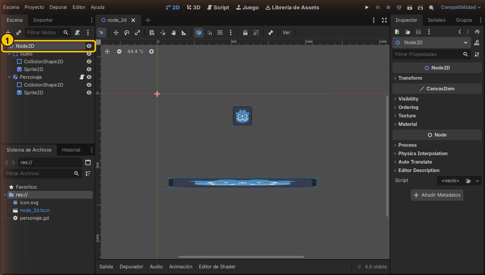
- 1Nodo raíz
2Añade un Area2D
Pulsa +, busca Area2D y pulsa Crear. Cámbiale el nombre a Zona (F2).
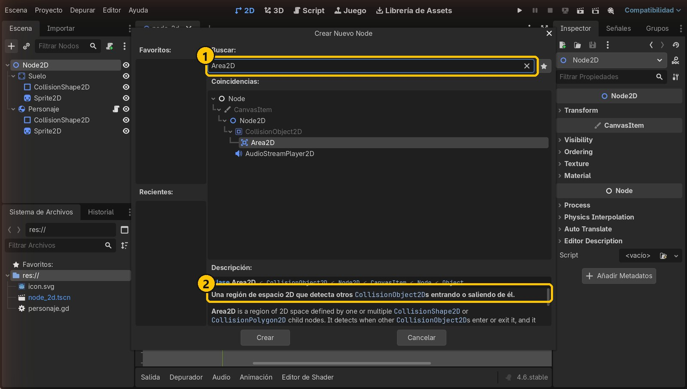
- 1Busca Area2D
- 2Detecta cuerpos que entran o salen
3Dale forma y colócala
Añade a Zona un CollisionShape2D con un RectangleShape2D de 200 × 200. Selecciona Zona y pon Position x = 850, y = 480: queda sobre el suelo, a la derecha. Truco: escribe position en Filtrar Propiedades para encontrarla rápido.
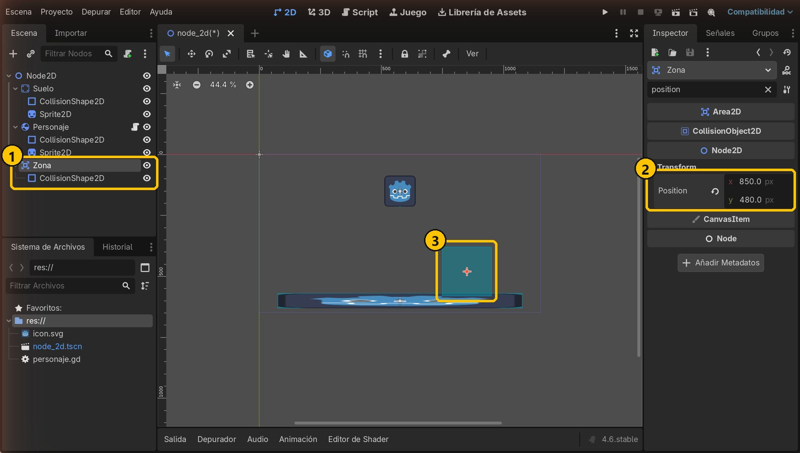
- 1Zona y su forma
- 2Position: 850, 480
- 3La zona en el visor
4Añade un Label para el contador
Con Zona seleccionada, añade un hijo Label y llámalo Contador.
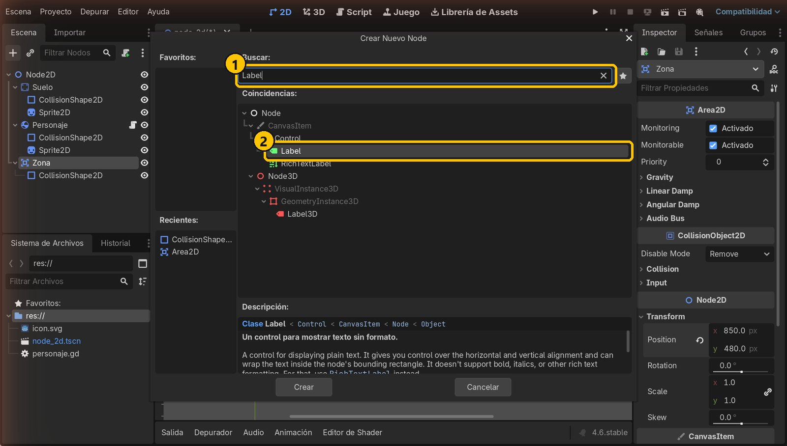
- 1Busca Label
- 2Label
5Prepara el texto
En el Inspector, escribe 0 en Text. Para que se vea grande: Theme Overrides → Font Sizes → Font Size, activa la casilla y pon 64. En Layout → Transform → Position pon x = -20, y = -190 para colocarlo encima de la zona.
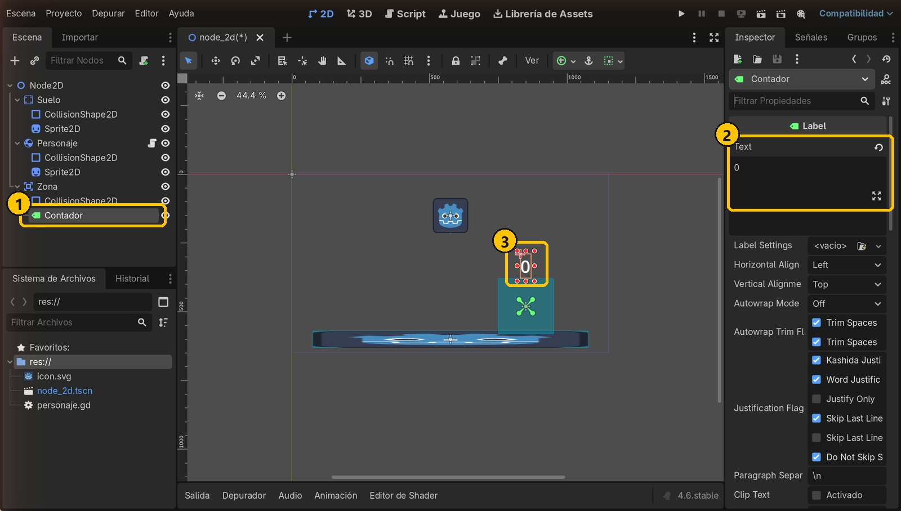
- 1Contador, hijo de Zona
- 2Text: 0
- 3El 0 encima de la zona
6Añade un script a la Zona
Selecciona Zona y pulsa el botón de añadir script. Hereda de Area2D y se guarda como res://zona.gd. Pulsa Crear.
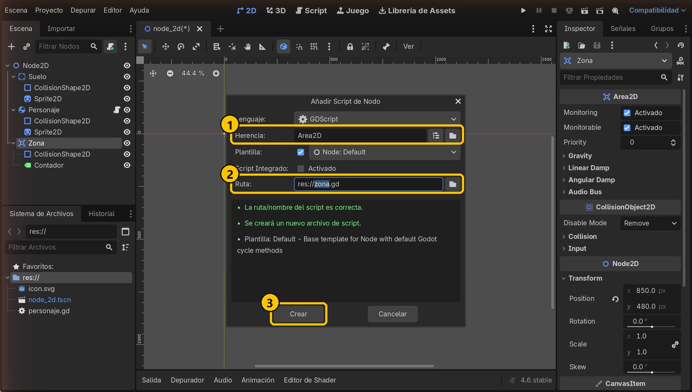
- 1Hereda de Area2D
- 2zona.gd
- 3Crear
7Busca la señal body_entered
Con Zona seleccionada, abre la pestaña Señales (junto al Inspector). Ahí están todos los avisos que puede lanzar un Area2D. Nos interesa body_entered: «ha entrado un cuerpo».
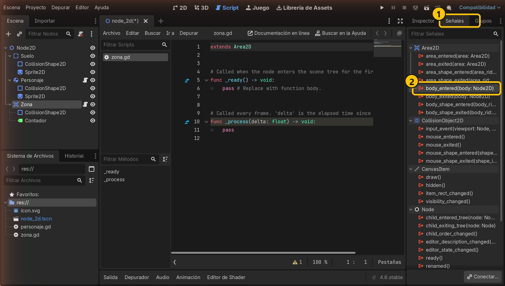
- 1Pestaña Señales
- 2body_entered(body)
8Conecta la señal
Haz doble clic en body_entered. En el diálogo elige Zona como receptor (el nodo cuyo script recibirá el aviso). El método se llamará _on_body_entered. Pulsa Conectar.
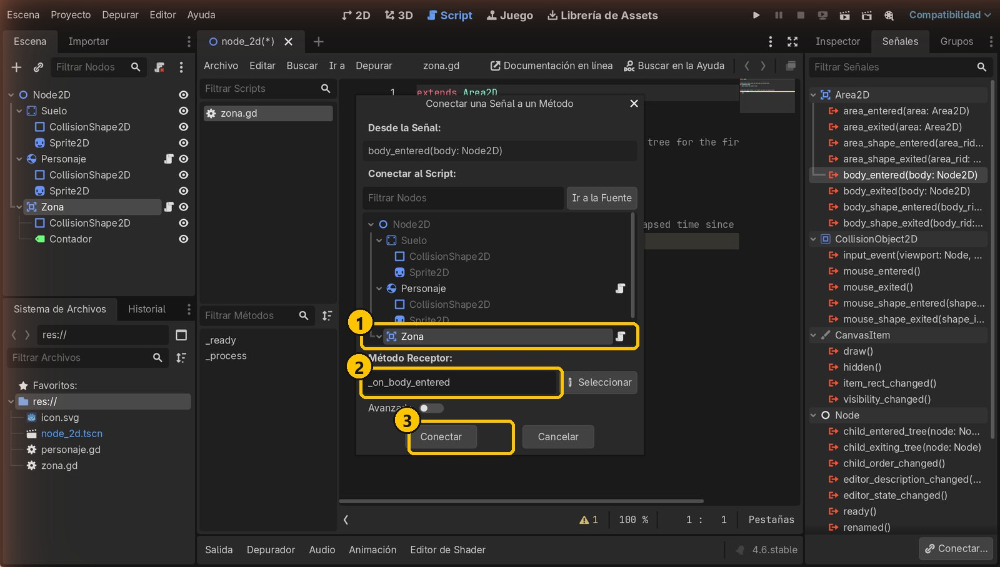
- 1Receptor: Zona
- 2Nombre de la función
- 3Conectar
9Godot crea la función
En el script aparece func _on_body_entered(body) con un icono verde: está conectada. Se ejecutará sola cada vez que un cuerpo entre en la zona.
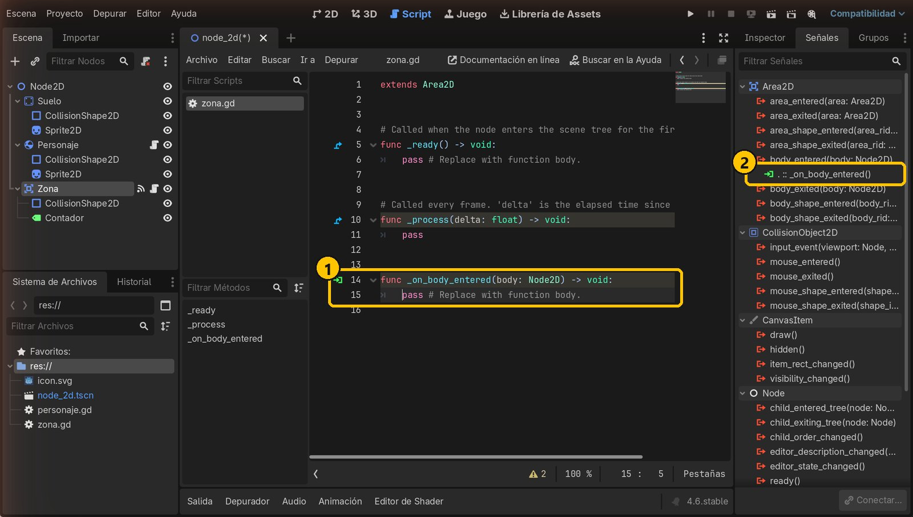
- 1Función conectada (icono verde)
- 2La conexión en la lista de señales
10Escribe el código del contador
Sustituye el script por este código y guarda. Comprobamos que el cuerpo es un RigidBody2D porque el suelo también es un cuerpo y toca la zona: sin esa comprobación también lo contaría. $Contador es el Label hijo y str() convierte el número en texto.
extends Area2D
var contador = 0
func _on_body_entered(body: Node2D) -> void:
if body is RigidBody2D:
contador = contador + 1
$Contador.text = str(contador)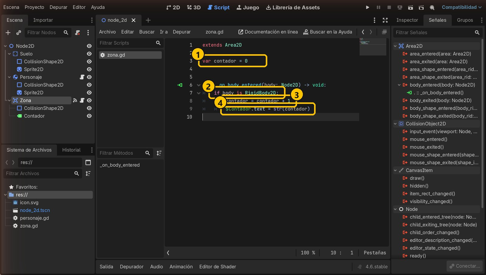
- 1El contador empieza en 0
- 2¿Es un RigidBody2D?
- 3Suma 1
- 4Lo escribe en el Label
11Truco: ver las formas al jugar
En el menú Depurar, activa Ver Formas de Colisión. Así verás la zona (y las demás formas) mientras juegas.
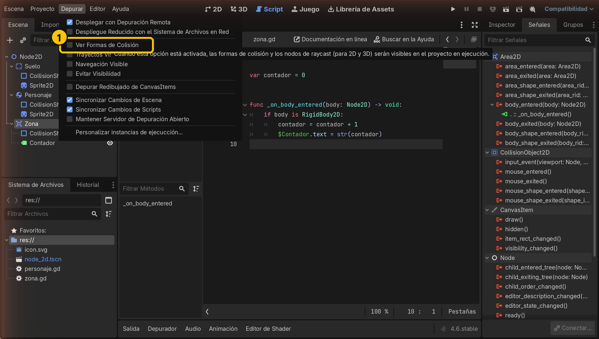
- 1Ver Formas de Colisión
12Ejecuta y entra en la zona
Ejecuta con F5 y pulsa →. Cuando el personaje entra en la zona, la señal salta y el contador pasa a 1. Vuelve con ← y entra otra vez: 2, 3…
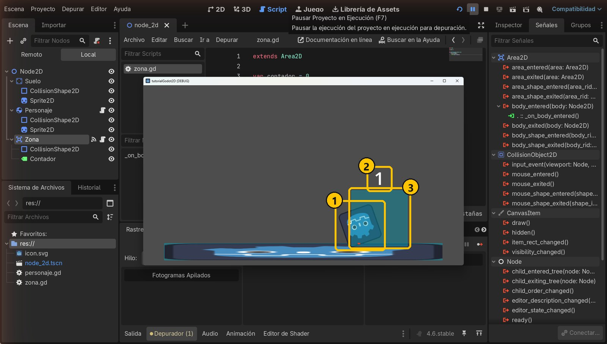
- 1El personaje entra
- 2El contador sube
- 3La zona, visible al depurar
Resumen
- Un Area2D detecta los cuerpos que entran en su forma (no choca con ellos).
- Avisa con la señal
body_entered, que se conecta a una función del script. - Comprueba siempre qué ha entrado (
body is RigidBody2D) antes de reaccionar.
Si algo falla
- El contador no cambia. Mira si la función tiene el icono verde. Si no, la señal no está conectada: vuelve a la pestaña Señales y conéctala a Zona.
- Error «Node not found: Contador». El Label debe ser hijo de Zona y llamarse exactamente
Contador(mayúsculas incluidas). - El contador empieza en 1 sin tocar nada. Falta
if body is RigidBody2D:y está contando el suelo. - Cambié el nombre de la función y dejó de funcionar. La conexión guarda el nombre
_on_body_entered. Si lo cambias, reconecta la señal.
Prueba tú
- Añade la señal
body_exitedy haz que el contador muestre «fuera» cuando el personaje sale. - Mueve la zona a la izquierda y ponle otra más: ¿cada una lleva su propio contador?
- Cambia el texto para que muestre
"Entradas: " + str(contador).